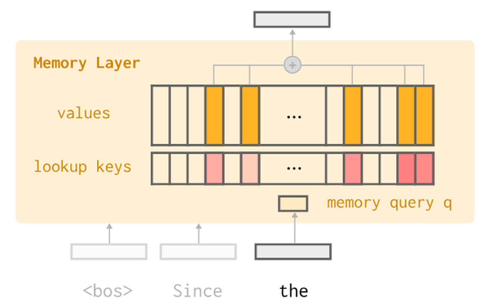
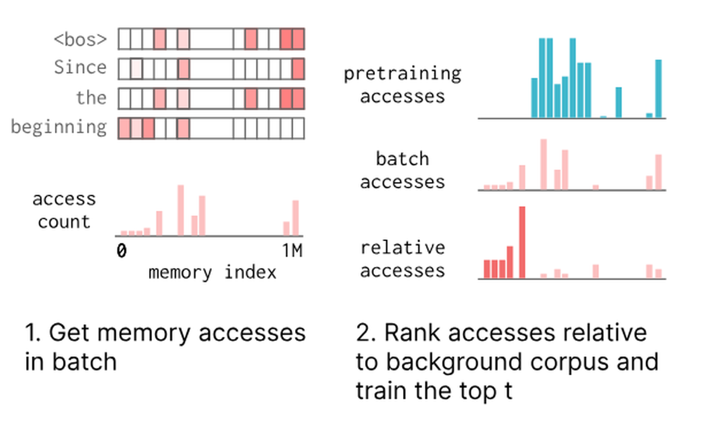
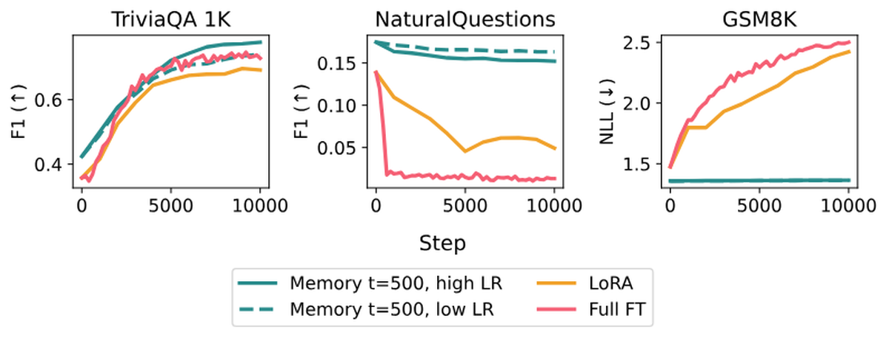
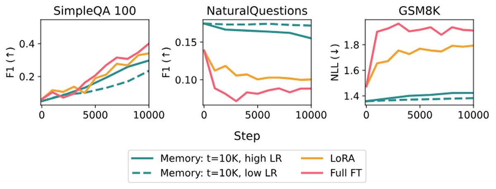
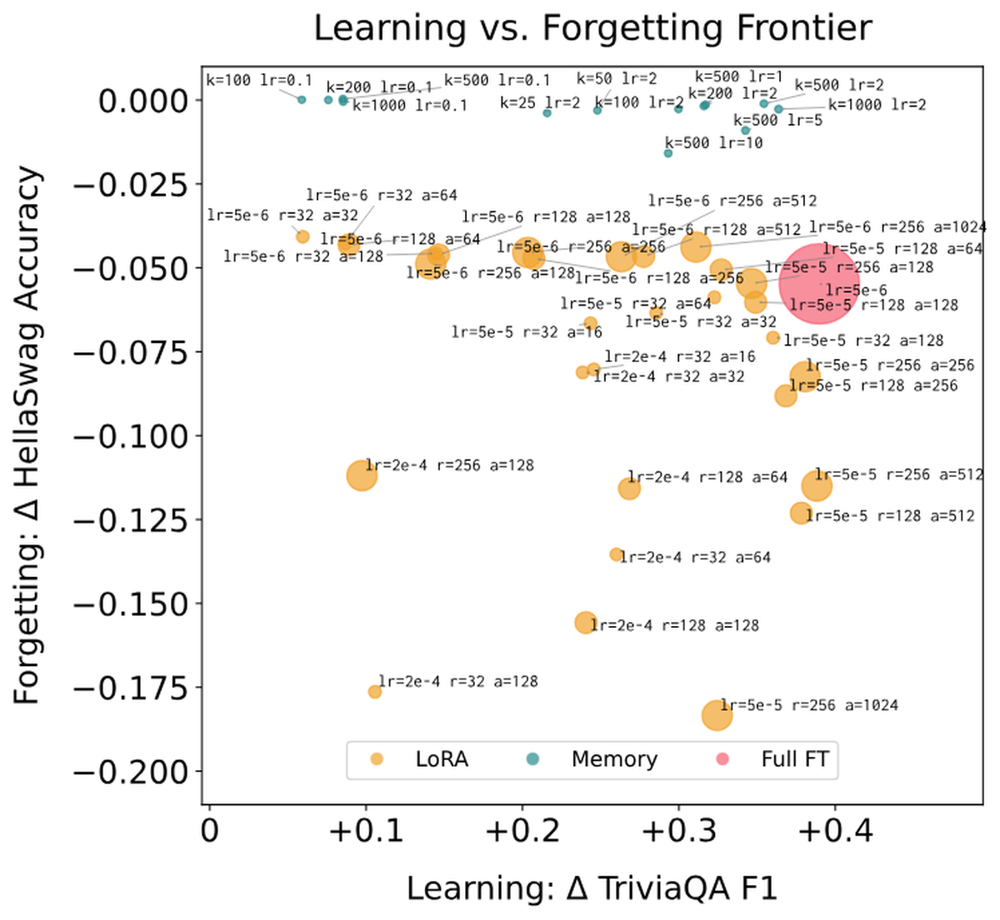
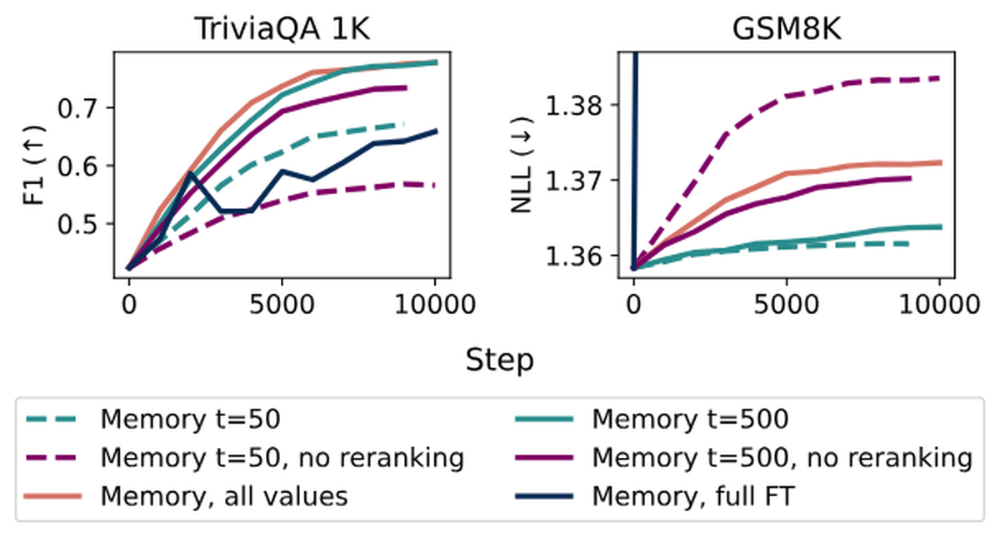
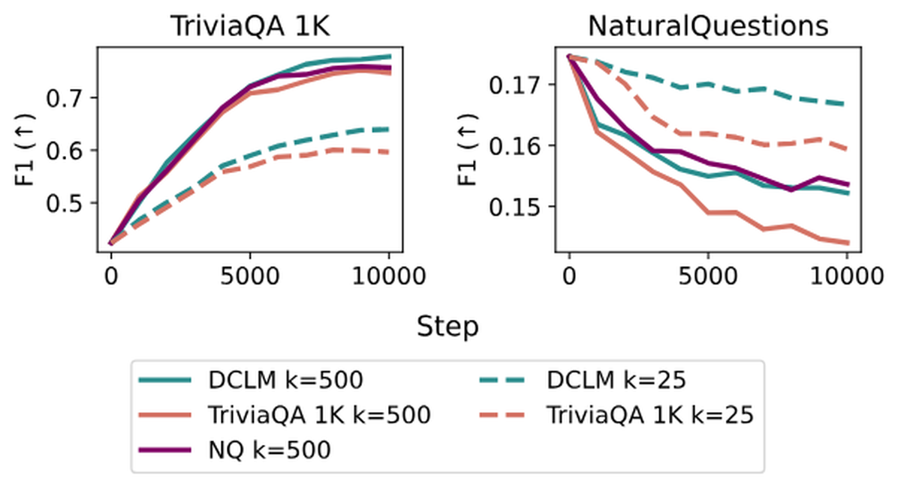

语言模型很强，但部署后通常是静态的。要构建能随时间持续学习的模型，最大的障碍是灾难性遗忘：在新数据上更新，会抹掉之前获得的能力。
这篇论文的直觉是：既然共享参数导致遗忘难以避免，那能否用稀疏的参数更新来学习而不遗忘？它提出稀疏记忆微调（Sparse Memory Finetuning）：借助记忆层模型，只更新新知识高度激活的那几个记忆槽。结果是：学同样多的新知识，全量微调让NQ F1掉了89%、LoRA掉71%，而稀疏记忆微调只掉11%。
语言模型把海量信息存在参数里，但这份知识在预训练后基本固定。如何构建能从经验中持续积累知识的系统？这种持续学习能力，能让模型记住我们教的东西、从错误中学习、在真实世界获得新技能。这是AI的长期挑战，在LLM时代依然存在。
持续学习的关键障碍是灾难性遗忘：在流式新信息上更新时，模型常常丢失之前习得的能力。回放预训练或之前训练阶段的数据可以缓解遗忘，但数据效率低，且随着经验增长不可扩展：现代LLM已经历多轮预训练、post-training、对齐，回放正变得越来越难实施。根本问题在于：模型全生命周期优化同一组参数，除非所有下游任务同时优化，否则必然产生干扰。
记忆层（memory layers）给Transformer加一块可训练的参数量化记忆，用类注意力机制查询。标准Transformer块是自注意力加前馈网络，记忆层把部分前馈层替换成对大小为N的记忆池的查询：池含keys K和values V。给定输入x与查询投影q(x)，先取top-k索引，算softmax分数，再加权求和得到输出，最后套一层输入依赖的gating。

区别于注意力，keys和values是可训练参数（而非激活值）。这也可看作一种大规模MoE：每个记忆位置是一个小专家。典型记忆规模是10亿参数模型的1M-100M个keys，用product keys做高效查找。
记忆层相对MoE的优势：每个token只激活一小撮参数而非一个大专家，解码效率高得多。更关键的是，它能对信息的存取做远更细粒度的控制：每个token只激活总记忆参数的极小比例（约0.03%-0.0002%），而MoE通常激活10-100个专家之一。
方法核心是在新知识上用更稀疏的更新微调记忆层。记忆层每次前向已经稀疏索引：每个token在k个值上访问（如k=32，对应1M索引池）。但朴素地微调记忆层仍会导致灾难性遗忘，因为某批次访问的有些记忆槽服务于通用目的（预测语法结构或广泛领域特征）。直观上，我们想只微调「存着」某段知识的最小参数集。

为此，只更新对特定输入「专属」的记忆槽：即相对其他输入，被这个输入高度访问的槽。这借用文档检索里的TF-IDF思想：衡量某词在本文档出现频率相对所有文档的重要性。把记忆槽当「词」、把批次当「文档」，用TF-IDF识别对某批次重要的记忆索引。
实现：数出该批次所有记忆访问，对每个槽相对「背景语料」（要保留的知识，主实验用1000个DCLM随机批次代表通用预训练数据）算TF-IDF。前向时所有访问槽都参与输出，但除了TF-IDF排名前top-t个槽外，其余记忆参数的梯度全部stop。这些后台索引在微调中不变，可静态存在checkpoint里。
用1.3B基础模型（所有方法用同一预训练数据），对比全量微调、LoRA、稀疏记忆微调。记忆增强模型把中层的FFN（22层中的第12层）换成对1M池的查询，每token 32次访问、4个记忆头、值维度1024：该层只需32×1024=32,768个活跃参数，替代原FFN的50M参数。
优化器是关键细节：先用AdamW，后发现其自适应步长+权重衰减+动量会与稀疏性意外交互。换SGD后稀疏记忆微调在保留任务上遗忘进一步降低（全量/LoRA无此收益）。最终各用各的最优优化器：基线用AdamW，稀疏记忆微调用SGD。
很多持续学习应用只要求把少量新信息整合进模型（如个性化、从单个用户反馈学习）。这种「小数据」场景对微调尤其挑战：数据既少又窄域，持续梯度更新极易导致模型崩溃、遗忘通用能力。

测试方法：让模型按顺序学习单个事实。用TriviaQA测试集1000个问题改写为陈述句，每句填充到整批（每句用不同改写重复填满batch size 64），pad到最大序列长。对记忆微调，专门屏蔽padding位置访问的索引。发现top t=500就够最佳性能。
结果：稀疏记忆微调学得更多、在保留benchmark上遗忘更少。基础记忆增强模型起点就更高（预训练知识保留更好）。低学习率更进一步保留保留集性能，同时仍达到基线的目标性能。
第二个任务评估模型能否从连续文档流学习。用SimpleQA维基子集（100个问题、1824个文档块），假设模型一次遇到一个块就立即做梯度步（非iid洗牌），用Active Reading生成每块N个合成增强作为批内序列。因每批信息量更高，用更大的top t=10000。

结果：全量与LoRA在增强文档场景表现比小数据好（更多样、更像iid预训练），但仍在保留benchmark上遗忘。稀疏记忆微调达成同样目标性能，遗忘却少得多。
学习与遗忘有根本权衡：要最大学习就高学习率多步更新更多参数，要最小遗忘就冻结模型。扫描各方法主参数：全量微调的学习率、LoRA的rank/alpha/目标模块、稀疏记忆微调的top-t与学习率。结果是稀疏记忆微调确实Pareto占优：学得更多同时忘得更少。

消融方法本身：对比微调所有被访问槽、以及只按原始次数（纯TF排名，非TF-IDF）微调top-t。结论：用top t个就达和全量微调相当的学习性能、却更保保留集。若同样数量的top-t用纯TF排名，学习相当但遗忘更多：差距在t更小（如t=50）时拉大。这印证直觉：IDF在微调多索引时没那么关键，但限制可学习参数时识别最关键的索引至关重要。
背景语料的选择影响排名。对比用DCLM（通用预训练代表）、用所有TriviaQA样本的索引（学习集）、用NaturalQuestions的索引（保留集）。用TriviaQA索引排名会保留更少且遗忘更多：因为没直接保留预训练知识；用NQ排名性能接近DCLM。TF-IDF能识别跨很多NQ问题共用的索引，即共享保留「领域」的索引：这解释了为何接近DCLM。


论文还做记忆访问的微观分析：单个事实只需25个索引来回答，而核心集有477个索引。这揭示了稀疏性为何有效：每段知识真正依赖的记忆槽极少，精确更新它们即可。
论文证明稀疏参数更新原则可能是持续学习的有前景路径。记忆层被稀疏索引设计，天然支持这种范式：只更新新知识高度激活的记忆槽，就能把新知识内化,而几乎不干扰已有能力。
一个坦诚的边界：方法在事实学习任务上验证，RAG在今天可能是更自然的解法。但作者想为更广义的持续学习铺路：让agent在真实世界积累经验时提升编码能力，把错误、反馈、推理链的教训「蒸馏」进参数，而非仅仅存储检索。未来工作包括扩展到更复杂任务与更大模型、输入依赖的自适应t、以及用更精妙的标准去推Pareto前沿。
参考：https://arxiv.org/abs/2510.15103